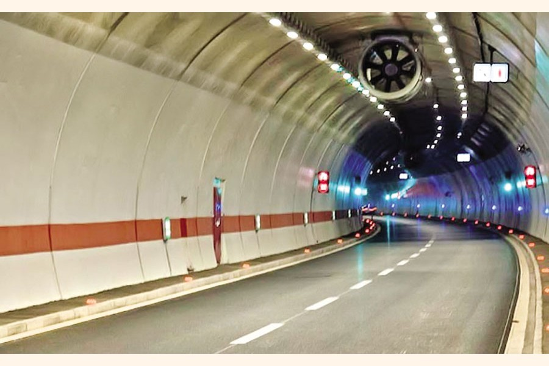

|  |
A tunnel is a passageway that is made under the ground, usually through a hill or under the sea or river. In a word, it impacts our economic growth. The method of tunnel construction depends on the ground conditions, the groundwater conditions, etc. Tunnels allow rapid and unobstructed transport facilities in big cities. Bangladesh is going to build a tunnel for the first time. The name of the tunnel is Bangabandhu Sheikh Mujibur Rahman Tunnel or Karnaphuli Tunnel. It is one of the mega-project in Bangladesh. It is an under-construction underwater expressway tunnel in the port city of Chattogram in Bangladesh under the Karnaphuli river. The length of the entire route is 9.39 kilometers. The tunnel diameter will be 10.80 meters (35.4 ft). The cost of the project is estimated at 10,374 Crore. It is financed by the Exim Bank of China. The tunnel is expected to be completed in 2022 and will be the first river tunnel in South Asia. It is expected to improve the Dhaka—Chittagong—Cox's Bazar highway network. A Chinese company, China Communications Construction Company, was selected to construct it. The country's GDP is likely to increase by 0.17 percent. It will reduce the distance of 40 km from Cox's Bazar to Chittagong.